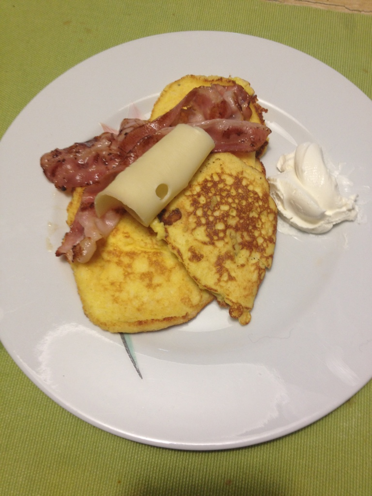
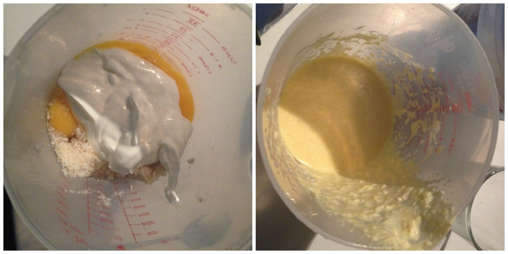
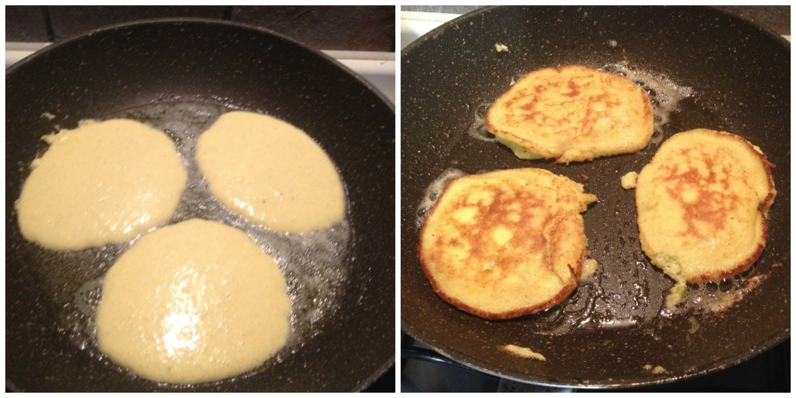

Almond flour pancakes (low-carb)¶
Pancakes served with cream cheese and bacon... yummy!
- Serves: 2
- Type: Dessert - breakfast main
Who does not love pancakes for breakfast?, especially on a Sunday morning when it is gloomy outside and you need a good reason to go out of the bed. Since that we are on a low carb diet I was looking for a recipe to give me this kind of good morning. This is a simple recipe, it takes less than half hour to prepare it and it is so tasty.
Ingredients¶
1 cup almond flour 1/4 cup dry coconut 1 tablespoon liquid sweetener or 1 tablespoon stevia 2 egg 1/4 cup greek yogurt 1 teaspoon baking soda 2 teaspoon butter
Steps¶
Mix all the ingredients with a whisk
Mix all the ingredients
Let the batter leaven for at least 15 minutes
Melt the butter in a fry pan with medium heat, used a ladle to pour the batter on it when the fry pan is warm and form a pancake. Once the batter starts bubbling on the up side use a spatula to flip the pancake over and cook on the other side.
Cooking the pancakes
Can be served with¶
- Almond butter
- Low carb syrup
- Fried Bacon
- Greek yogurt
- Cream cheese
- Berries